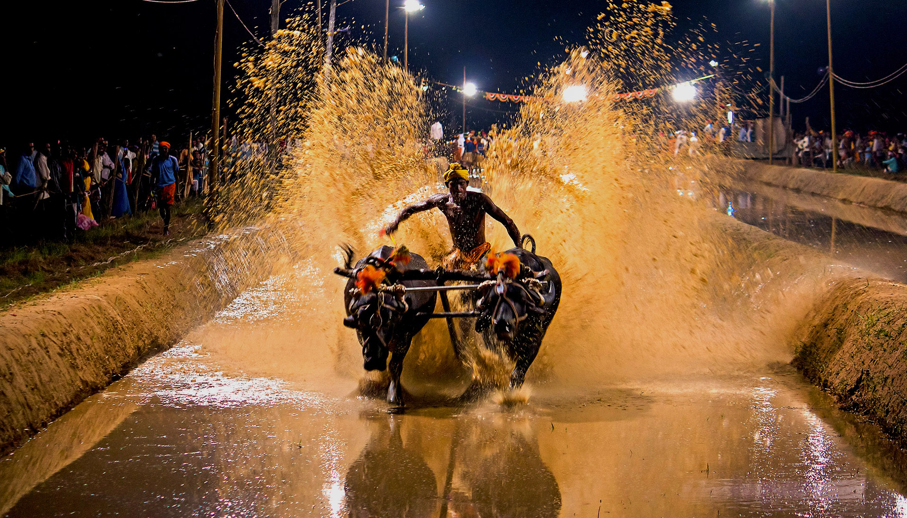

Introduction to Kambala
December, 2021 
Kambala is one of the historic traditional celebration/sports of Karnataka's coastal areas like Dakshina Kannada, Udupi. This sports is the center of attraction for the people of this coastal area, as well as photographers who want to click some good race photos. This sports mainly includes Buffallos and a runner. Here the speed of the race not only determined by the rider it's by both riser and buffalos.
In earlier days these races were happening in rural villeges. In those days in rural areas of this coastal area like Kundapura, Udupi, Moodabidri, Mangalore after all process of paddy crop that field will be free for few months, So in that time these rural area people started this race to get some entertainment for relaxation. So in that time there was no dedicated tracks like today what we see so they organized these events in the field only.
As the time passed this traditional way of race got modern touch. So eventually some dedicated tracks were built for this race. For this race initially the race track should be filled with water. There are few important parts in Kambala.
They are,
- Race Track
- Rider
- Owner
- Buffalos
- Season
Race Track:
This is the important part of the Kambala. This is the place where entire competition takes place, This contains 2 tracks as the requirement for the race between 2 set of buffalos. Length of this track will be between 100m to 150m. This track will be filled with water and mud as it is the required enironment for this race.Rider:
Rider is the important person in this race. On the race field rider plays important role than the owner of the buffalos. He should be fit and fine so that at any point of race he should be fit to run as fast as possible along with the buffalos. As of now there are few riders who run in very high speed along with buffalos and covered 140m in 12 seconds.Owner:
Owner is the person who owns the buffalos. He has to spend huge amount of money for feeding those buffalos and to look after their health and other requirements. Holding those buffalos costs huge amount money. There are few owners in these areas who takes very much care about their buffalos by building swimming pool for them, because these buffalos love to swim.Buffalos
Buffalo is the main part of this race. There will be set of 2 buffalos, both should be fit and they should match each other. In selecting buffalos owners put huge effort to select good buffalos. Feeding these buffalos costs much as they have different kind of requirements in their food and daily oil massages.Season
Normally winter season is called as Kambala Season in these coastal area i.e from November till March. Though it is winter season there will be huge crowd will be gathered in Kambala place.This is the brief introduction of some parts of Kambala.
Winners of this race will be awarded with gold medals as well as money. There are few buffalos won the race continuosly for many years, And these buffalos felicitated as like humans in the Kambala events.
Nowadays Kambala associations are conducting some training camps for the candidates who are interested to take part in this Kambala event as rider, so they are taking measures to continue this tradition in the future generation also.
Thank you